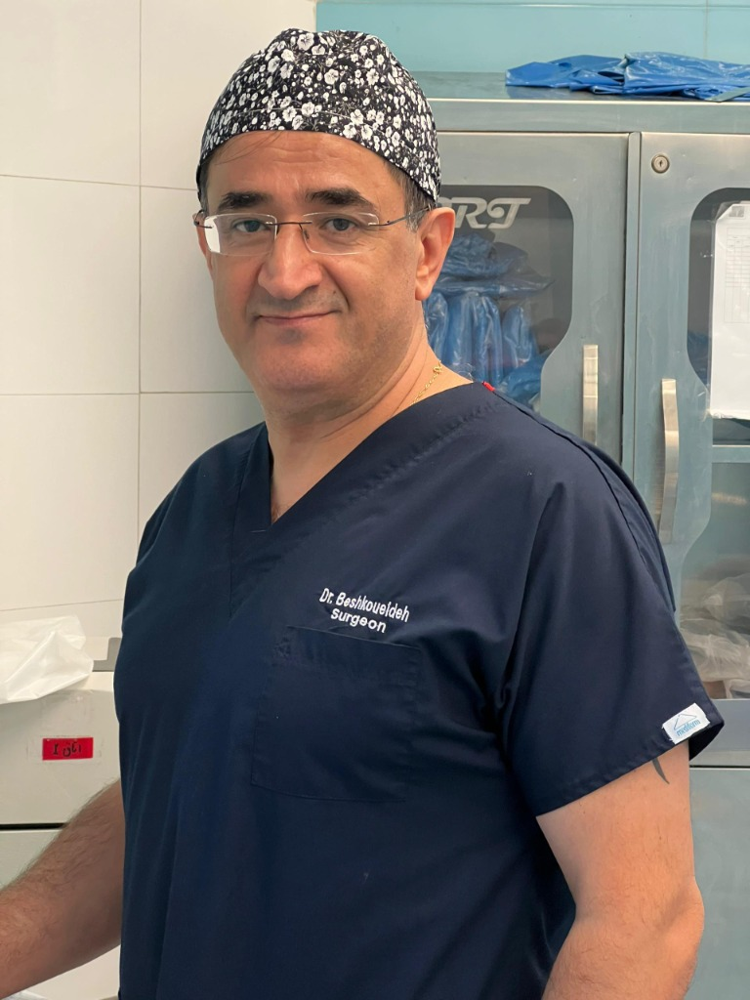

با تکنیکهای پیشرفته جراحی زیبایی و درمانی به ظاهر ایدهآل خود برسید. دکتر نادر بشکوئیده تجربه بینالمللی را با دقت هنرمندانه برای نتایج طبیعی و زیبا ترکیب میکند.
سال تجربه
جراحی موفق
رضایت بیماران

سال تجربه
دکتر نادر بشکوئیده جراح عمومی و زیبایی در تهران، فارغالتحصیل دانشگاه لیوبلیانا اسلوونی و دارای بورد GMC انگلستان است. ایشان فعالیت حرفهای خود را در حوزه جراحیهای درمانی و زیبایی از سال ۲۰۰۶ آغاز کرده و سابقه جراحی در بیمارستانهای اسلوونی، انگلستان و ایران را دارد.
ایشان عضو انجمن جراحان اروپا بوده و با شرکت در کنگرههای بینالمللی جراحی و گذراندن دورههای تخصصی، همواره از جدیدترین تکنیکها در جراحیهای زیبایی و درمانی استفاده میکنند.
شماره نظام پزشکی: ۱۷۵۷۷۷
فارغالتحصیل اسلوونی
جراح تأیید شده
عضو انجمن جراحان
فعالیت بینالمللی
جراحیهای تخصصی زیبایی متناسب با آناتومی و اهداف زیبایی منحصر به فرد شما.
ماموپلاستی و لیفت سینه از محبوبترین جراحی های زیبایی سینه برای بالا کشیدن سینه، فرم دهی سینه، اصلاح افتادگی سینه و ایجاد سینه های خوش فرم و جوانتر هستند.
این جراحی علاوه بر زیبایی، میتواند به کاهش فشار روی گردن، شانه ها و ستون فقرات در افرادی با سینه های بزرگ و سنگین کمک کند و باعث احساس سبکی و راحتی بیشتر در فعالیت های روزانه شود.
مناسب افرادی است که:
پروتز سینه یا جراحی ایمپلنت سینه، یکی از محبوبترین جراحی های زیبایی برای افزایش حجم سینه، فرم دهی سینه و ایجاد تناسب بیشتر در اندام بدن است.
جراحی پروتز سینه به برجسته تر شدن سینه ها، بهبود فرم سینه، افزایش اعتماد به نفس و اصلاح عدم تقارن سینه کمک میکند.
مناسب افرادی است که:
ابدومینوپلاستی یا ابدو، یکی از پرطرفدارترین جراحی های زیبایی شکم برای برداشتن کامل پوست اضافه و افتادگی شکم، حذف چربی اضافی و فرم دهی شکم و پهلو است.
جراحی ابدومینوپلاستی به صاف تر شدن شکم، سفت تر شدن ناحیه شکم و بهبود فرم بدن کمک میکند. ابدومینوپلاستی بعد از بارداری، کاهش وزن شدید و شل شدن پوست شکم کاربرد زیادی دارد.
کاندید مناسب:
لیپوساکشن یا لیپو، یکی از پرطرفدارترین جراحی های زیبایی بدن برای تخلیه چربی های موضعی و فرمدهی اندام است. لیپوساکشن شکم، پهلو، ران، بازو و غبغب به کاهش سایز، فرم دهی بدن و خوش فرم تر شدن اندام کمک میکند.
لیپوساکشن یک جراحی تهاجمی است و باید در محیط بیمارستانی استاندارد، توسط جراح متخصص و با رعایت کامل اصول ایمنی انجام شود. حجم جراحی، کیفیت پوست، فرم بدن و شرایط بدنی هر فرد در نتیجه نهایی تأثیر زیادی دارد.
کاندید مناسب:
وقتی صحبت از بدن و اعتماد به نفس شما میشود, همه جزئیات مهم است
جراحی در بیمارستانهای معتبر تهران با بالاترین استانداردهای ایمنی.
تجربه جراحی در اسلوونی، انگلستان و ایران با گواهینامههای اروپایی.
نتایج متناسب با آناتومی منحصر به فرد شما برای طبیعیترین نتیجه.
بهروزرسانی مداوم از طریق کنگرههای بینالمللی و دورههای تخصصی.
تجربیات واقعی از بیمارانی که به ما اعتماد کردند.
«دکتر بشکوئیده باعث شد احساس آرامش کامل کنم. تجربه بینالمللی ایشان در تمام جنبهها مشهود است — از مشاوره تا نتایج نهایی. واقعاً استثنایی.»
«بعد از ابدومینوپلاستی احساس میکنم یک نفر جدید شدهام. توجه دکتر به جزئیات و رویکرد مراقبتی ایشان در دوره بهبودی فوقالعاده بود.»
«نتایج بلفاروپلاستی فراتر از تصور من بود. طبیعی، بدون جای زخم قابل مشاهده. دکتر بشکوئیده واقعاً یک هنرمند است.»
«من جراحی پروتز سینه انجام دادم و کل روند بینظیر بود. شکل و اندازه دقیقاً همانی است که صحبت کرده بودیم. دکتر بشکوئیده یک جراح فوقالعاده هستند.»
«حرفهای بودن کلینیک و خود دکتر نادر به من اطمینان زیادی داد. من از نتایج ماموپلاستی خودم کاملاً راضی و خوشحالم.»
اولین قدم به سوی تغییر خود را بردارید. همین امروز یک جلسه مشاوره خصوصی رزرو کنید.
تهران، جردن، کوچه آناهیتا، پلاک ۱۱
مطب: دوشنبهها از ساعت ۱۶:۰۰
مشاوره آنلاین: هر روز ۱۰ صبح تا ۸ شب